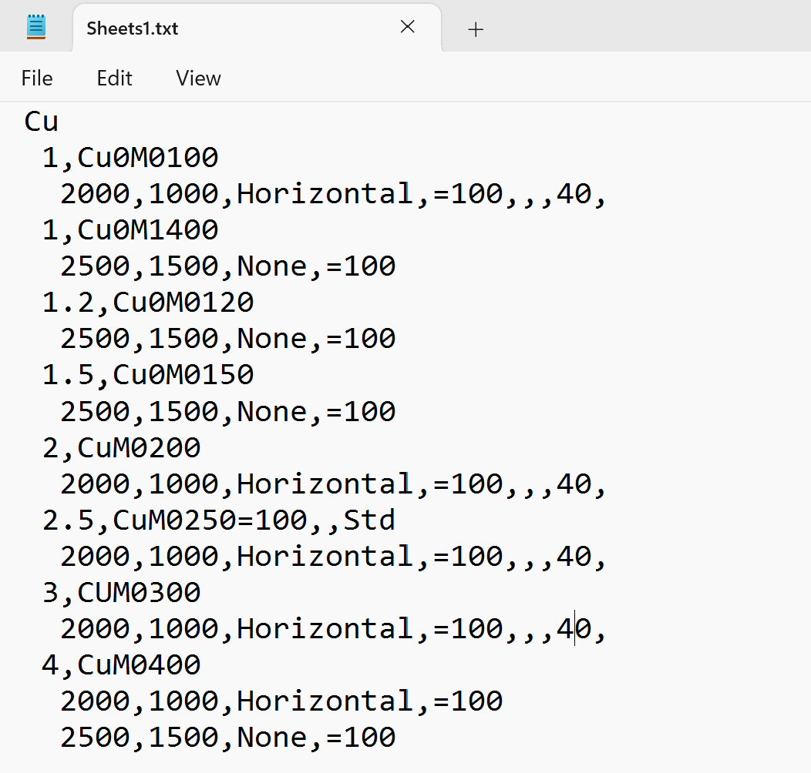
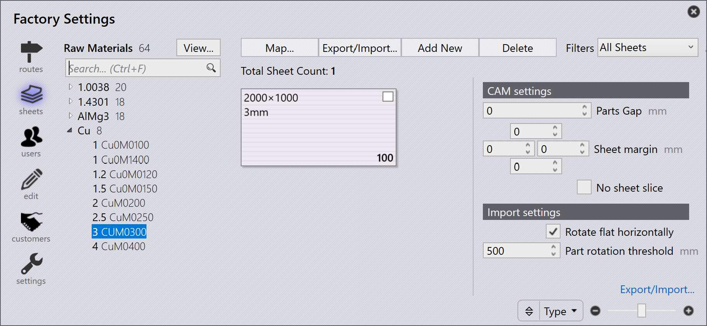

Εξαγωγή/Εισαγωγή υλικού
Χρήση μορφής κειμένου
Για να εξαγάγετε υλικά αποθέματος, μεταβείτε στο Factory → Sheets, κάντε κλικ στο Export/Import , επιλέξτε Export sheets, επιλέξτε .txt, και αποθηκεύστε το στον φάκελο προορισμού.

Ανοίξτε το εξαγόμενο αρχείο .csv, προσθέστε μια νέα Πρώτη Ύλη και Μεταλλική Πλάκα με τις απαραίτητες λεπτομέρειες και στη συνέχεια αποθηκεύστε το αρχείο.
Για να εισαγάγετε το ενημερωμένο αρχείο, μεταβείτε στο Factory → Sheets → Export/Import, επιλέξτε Import, επιλέξτε το τροποποιημένο αρχείο TXT και τα νέα υλικά και μεταλλικές πλάκες που προστέθηκαν θα εμφανιστούν στο TruSmartCAM.


Χρήση μορφής CSV
-
Κάντε κλικ στο Factory → Sheets → Export/Import… → Export sheets. Επιλέξτε αρχείο CSV και αποθηκεύστε το στον φάκελο προορισμού.
-
Προσθέστε μεταλλικές πλάκες και παραμέτρους μεταλλικής πλάκας, αποθηκεύστε το αρχείο .csv.
-
Χρησιμοποιώντας το Import sheets, επιλέξτε το τροποποιημένο αρχείο .csv.
-
Τα νέα υλικά και μεταλλικές πλάκες που προστέθηκαν θα εμφανιστούν στο TruSmartCAM.
Η Εισαγωγή Υλικού πρέπει να είναι ένα ειδικά δομημένο αρχείο κειμένου που καλύπτει την ακόλουθη μορφή.
Material-Name=[BendMaterial],[Density],[FName];
RawMaterial-Thickness,[Name]=[Film],[Treatment],[Surface];
Sheet-Width,Height,Grain,Desc,HeatNumber=Qty,[Factory],[Shelf],[Cost],[Comments]Παράδειγμα: Aluminum0.5,Aluminum-051500,1500,None,=112,,,22,2500,1250,Horizontal,=105,,,7,2500,1500,None,=100
| Για να δημιουργήσετε εύκολα ένα αρχείο εισαγωγής, εξαγάγετε πρώτα τα υλικά και στη συνέχεια κάντε τροποποιήσεις σε αυτό ή δείτε τη δομή του. |